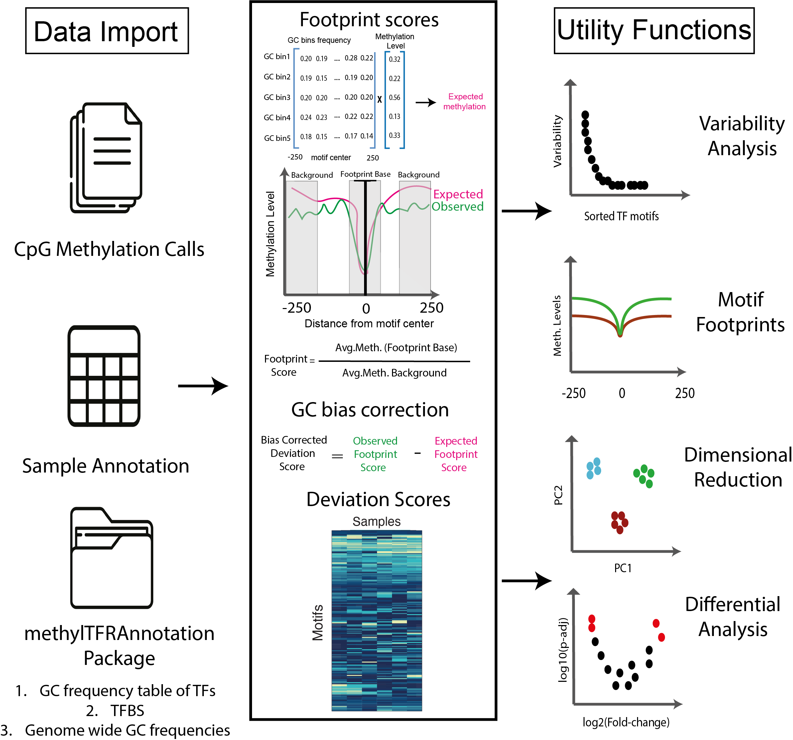

methylTFR: Quantification of DNA Methylation Signatures in Transcription Factor Binding Sites
Irem B. Gündüz, Sarath Kumar Murugan, Fabian Muller
2026-08-21
Source:vignettes/methylTFR.Rmd
methylTFR.RmdIntroduction
DNA methylation can modulate transcription factor (TF) binding,
particularly when occurring within transcription factor binding sites
(TFBS). methylTFR is an R package that identifies DNA
methylation signatures at TFBS using whole-genome bisulfite sequencing
(WGBS) data.
For each sample, methylation levels are first aggregated across all
genomic regions corresponding to TFBS. This yields the observed
deviation, which captures the raw signal of methylation
enrichment or depletion for each TF. To account for sequence composition
biases, methylTFR then estimates an expected
deviation using genomic background models derived from TF motif
GC content and genome-wide GC frequency. This deviation matrix provides
a compact and interpretable representation of TFBS methylation across
samples, suitable for downstream analyses such as dimensionality
reduction (e.g., PCA, UMAP), clustering, differential testing, and
visualization of TF-specific methylation footprints.

Installation
methylTFR is currently under review for Bioconductor.
Until it is accepted, install the development version from GitHub:
if (!requireNamespace("remotes", quietly = TRUE)) {
install.packages("remotes")
}
remotes::install_github("EpigenomeInformatics/methylTFR")Once accepted, it will be installable with:
if (!requireNamespace("BiocManager", quietly = TRUE)) {
install.packages("BiocManager")
}
BiocManager::install("methylTFR")Getting Started
To get started with methylTFR, load the package and its dependencies:
library(methylTFR)
#> Loading required package: data.table
#> Loading required package: SummarizedExperiment
#> Loading required package: MatrixGenerics
#> Loading required package: matrixStats
#>
#> Attaching package: 'MatrixGenerics'
#> The following objects are masked from 'package:matrixStats':
#>
#> colAlls, colAnyNAs, colAnys, colAvgsPerRowSet, colCollapse,
#> colCounts, colCummaxs, colCummins, colCumprods, colCumsums,
#> colDiffs, colIQRDiffs, colIQRs, colLogSumExps, colMadDiffs,
#> colMads, colMaxs, colMeans2, colMedians, colMins, colOrderStats,
#> colProds, colQuantiles, colRanges, colRanks, colSdDiffs, colSds,
#> colSums2, colTabulates, colVarDiffs, colVars, colWeightedMads,
#> colWeightedMeans, colWeightedMedians, colWeightedSds,
#> colWeightedVars, rowAlls, rowAnyNAs, rowAnys, rowAvgsPerColSet,
#> rowCollapse, rowCounts, rowCummaxs, rowCummins, rowCumprods,
#> rowCumsums, rowDiffs, rowIQRDiffs, rowIQRs, rowLogSumExps,
#> rowMadDiffs, rowMads, rowMaxs, rowMeans2, rowMedians, rowMins,
#> rowOrderStats, rowProds, rowQuantiles, rowRanges, rowRanks,
#> rowSdDiffs, rowSds, rowSums2, rowTabulates, rowVarDiffs, rowVars,
#> rowWeightedMads, rowWeightedMeans, rowWeightedMedians,
#> rowWeightedSds, rowWeightedVars
#> Loading required package: GenomicRanges
#> Loading required package: stats4
#> Loading required package: BiocGenerics
#>
#> Attaching package: 'BiocGenerics'
#> The following objects are masked from 'package:stats':
#>
#> IQR, mad, sd, var, xtabs
#> The following objects are masked from 'package:base':
#>
#> anyDuplicated, aperm, append, as.data.frame, basename, cbind,
#> colnames, dirname, do.call, duplicated, eval, evalq, Filter, Find,
#> get, grep, grepl, intersect, is.unsorted, lapply, Map, mapply,
#> match, mget, order, paste, pmax, pmax.int, pmin, pmin.int,
#> Position, rank, rbind, Reduce, rownames, sapply, setdiff, sort,
#> table, tapply, union, unique, unsplit, which.max, which.min
#> Loading required package: S4Vectors
#>
#> Attaching package: 'S4Vectors'
#> The following objects are masked from 'package:data.table':
#>
#> first, second
#> The following object is masked from 'package:utils':
#>
#> findMatches
#> The following objects are masked from 'package:base':
#>
#> expand.grid, I, unname
#> Loading required package: IRanges
#>
#> Attaching package: 'IRanges'
#> The following object is masked from 'package:data.table':
#>
#> shift
#> Loading required package: GenomeInfoDb
#> Loading required package: Biobase
#> Welcome to Bioconductor
#>
#> Vignettes contain introductory material; view with
#> 'browseVignettes()'. To cite Bioconductor, see
#> 'citation("Biobase")', and for packages 'citation("pkgname")'.
#>
#> Attaching package: 'Biobase'
#> The following object is masked from 'package:MatrixGenerics':
#>
#> rowMedians
#> The following objects are masked from 'package:matrixStats':
#>
#> anyMissing, rowMediansRead a Sample File
The read_methylome() function is used to import
single-sample DNA methylation data into a GRanges
object.
It supports several common file formats, including EPP,
ALLC, BisSNP, bismarkCytosine,
bismarkcov, and ENCODE.
You can optionally filter out low-coverage sites using the
cov_threshold parameter (default = 1), which excludes
positions with insufficient read support.
Below is an example of reading an example EPP-formatted
file provided in the package:
epp_path <- system.file("extdata", "epp.tsv.gz", package = "methylTFR")
epp <- read_methylome(epp_path, "EPP")
epp
#> GRanges object with 6 ranges and 2 metadata columns:
#> seqnames ranges strand | score coverage
#> <Rle> <IRanges> <Rle> | <numeric> <numeric>
#> [1] chr1 3010957-3010958 + | 1.000 27
#> [2] chr1 3010959-3010960 - | 0.500 7
#> [3] chr1 3010971-3010972 + | 1.000 20
#> [4] chr1 3010973-3010974 - | 0.500 20
#> [5] chr1 3011025-3011026 + | 0.814 70
#> [6] chr1 3011027-3011028 - | 0.500 100
#> -------
#> seqinfo: 1 sequence from an unspecified genome; no seqlengthsAnnotation Resources
Computing expected deviations requires precomputed annotations for
the genome of interest: transcription factor binding sites, a
genome-wide GC distribution, and per-motif GC frequency tables. These
are distributed separately from methylTFR, in an annotation
package named after the assembly, for example
methylTFRAnnotationHg38. Keeping them out of the package is
a practical necessity: the binding sites alone run to several gigabytes
for a full motif set.
With the annotation package installed, the three resources are
retrieved with getTFbindsites(), getGenomeGC()
and getGCfreq(), as shown in the multi-sample section
below.
To build annotations for a different assembly, motif set, or region
restriction, use methylTFRAnnotationBuilder.
The examples in this section instead use a small BATF
subset bundled with methylTFR, so they run without any
annotation package.
Input Data
methylTFR relies on several precomputed annotation
resources to estimate expected methylation levels at transcription
factor binding sites (TFBS). These annotations include:
-
GC distribution (
gcdist_subset): Genome-wide GC content distribution around cytosines, used to model methylation expectations. -
Motif GC frequency (
BATF_gcfreqs): GC frequency profile specific to the BATF motif across TFBS, used to correct for sequence composition bias. -
TF binding sites (
BATF_tf_bindsites): AGRangesobject containing the genomic coordinates of BATF binding sites. -
Example methylation data
(
example_data): A small subset of methylation calls in EPP format, read using theread_methylome()function, provided for demonstration purposes.
The following code loads these example datasets and displays the first few entries:
# Load the data
load(system.file("extdata", "gcdist_subset.rda", package = "methylTFR"))
load(system.file("extdata", "BATF_gcfreqs.rda", package = "methylTFR"))
load(system.file("extdata", "BATF_tf_bindsites.rda", package = "methylTFR"))
load(system.file("extdata", "example_data.rda", package = "methylTFR"))
# Check the data
head(gcdist)
#> GRanges object with 6 ranges and 2 metadata columns:
#> seqnames ranges strand | GC_bias GC_bin
#> <Rle> <IRanges> <Rle> | <numeric> <integer>
#> [1] chr1 10471-10500 * | 0.866667 5
#> [2] chr1 10591-10620 * | 0.633333 5
#> [3] chr1 10621-10650 * | 0.800000 5
#> [4] chr1 13051-13080 * | 0.700000 5
#> [5] chr1 13261-13290 * | 0.666667 5
#> [6] chr1 13291-13320 * | 0.600000 5
#> -------
#> seqinfo: 22 sequences from an unspecified genome
head(gcfreqs$BATF[, 1:5])
#> [,1] [,2] [,3] [,4] [,5]
#> [1,] 0.1398816 0.1394321 0.1386829 0.1366599 0.1361355
#> [2,] 0.1538173 0.1546415 0.1580880 0.1591369 0.1620589
#> [3,] 0.1962239 0.2001199 0.1965985 0.1973477 0.1916536
#> [4,] 0.2734697 0.2706226 0.2724957 0.2718214 0.2769911
#> [5,] 0.2366075 0.2351839 0.2341350 0.2350341 0.2331610
head(tf_bindsites)
#> $BATF
#> GRanges object with 268717 ranges and 1 metadata column:
#> seqnames ranges strand | score
#> <Rle> <IRanges> <Rle> | <numeric>
#> [1] chr1 47430-47840 + | 16.7687
#> [2] chr1 57232-57642 + | 13.2598
#> [3] chr1 93216-93626 + | 14.9499
#> [4] chr1 96525-96935 + | 13.6042
#> [5] chr1 99285-99695 + | 13.9006
#> ... ... ... ... . ...
#> [268713] chrY 57027771-57028181 - | 15.5241
#> [268714] chrY 57050236-57050646 - | 14.0836
#> [268715] chrY 57074721-57075131 - | 13.8672
#> [268716] chrY 57080582-57080992 - | 13.3138
#> [268717] chrY 57166552-57166962 - | 13.3138
#> -------
#> seqinfo: 24 sequences from an unspecified genome; no seqlengths
head(msites)
#> GRanges object with 6 ranges and 2 metadata columns:
#> seqnames ranges strand | score coverage
#> <Rle> <IRanges> <Rle> | <numeric> <integer>
#> [1] chr1 10471-10472 - | 1 9
#> [2] chr1 10608-10609 + | 0 2
#> [3] chr1 10609-10610 - | 1 1
#> [4] chr1 10616-10617 + | 0 2
#> [5] chr1 10617-10618 - | 1 1
#> [6] chr1 10619-10620 + | 0 2
#> -------
#> seqinfo: 170 sequences from an unspecified genome; no seqlengthsCompute Deviation Score for a Single Sample and Single Motif
The computeDeviation() function calculates the deviation
score for a specific transcription factor (TF) motif in a single sample.
It compares the observed methylation at TF binding sites (TFBS) to the
expected methylation derived from GC frequency models.
This example uses the BATF motif and the example
methylation dataset loaded earlier. The methylation data must first be
binned by GC content using addGCBintoMethylome() before
computing the deviation.
# Add GC bins to methylation data
bin_meth <- addGCBintoMethylome(msites, gcdist, ignoreStrand = TRUE)
bin_meth
#> gcbin avg_mscore
#> [1,] 1 0.5315789
#> [2,] 2 0.6466688
#> [3,] 3 0.7217031
#> [4,] 4 0.7091566
#> [5,] 5 0.7838198
# Compute deviation score for BATF motif
deviation_score <- computeDeviation(
motif = "BATF",
msites = msites,
tf_bindsites = tf_bindsites,
gcfreqs = gcfreqs,
enhancer = NULL,
ignoreStrand = TRUE,
binMsites = bin_meth
)
# View the result
deviation_score
#> dev exp_dev
#> <num> <num>
#> 1: 1.743674 0.9835985Run methylTFR on multiple samples and motifs
The methylTFR package provides a
run_methyltfr function to run the analysis on multiple
samples and motif sites. You need to download the annotation package for
the human genome (hg38) and place it in your working
directory.
library(methylTFRAnnotationHg38) # annotation package for hg38
gcfreqs <- getGCfreq(motifSet = "jaspar2020")
gc_dist <- getGenomeGC("hg38")
tf_bindsites <- getTFbindsites(motifSet = "jaspar2020")
sample_dir <- file.path("samples_dir")
sample_ann <- "samples.tsv" # should contain column name bedFile
# deviation score matrix
deviations <- run_methyltfr(sample_ann, # sample annotation file
sample_dir, # where the EPP files are
threads = 8, # number of threads
chunkSize = 10, # number of chunks to process
sampleColName = "bedFile", # column name for EPP file paths in sample_ann
tf_bindsites = tf_bindsites, # TF binding sites
gcfreqs = gcfreqs, # GC frequency
gc_dist = gc_dist, # GC distribution
filetype = "EPP" # file type
)Run methylTFR directly on an RnBeads object
If the methylation data has already been imported and preprocessed
with RnBeads,
there is no need to export per-sample files first.
run_methylTFR_RnBeads() takes the RnBSet
object directly and returns the same methylTFRdeviations
object as run_methyltfr().
Methylation levels are read one sample column at a time, so
disk-backed sets created with disk.dump.big.matrices = TRUE
are never loaded into memory in full.
library(RnBeads)
library(methylTFRAnnotationHg38)
rnb_set <- load.rnb.set("reports/data_import_data/rnb.set_preprocessed")
gcfreqs <- getGCfreq(motifSet = "jaspar2020")
gc_dist <- getGenomeGC("hg38")
tf_bindsites <- getTFbindsites(motifSet = "jaspar2020")
deviations <- run_methylTFR_RnBeads(
rnb_set = rnb_set, # preprocessed RnBeads object
tf_bindsites = tf_bindsites, # TF binding sites
gcfreqs = gcfreqs, # GC frequency
gc_dist = gc_dist, # GC distribution
threads = 8, # number of threads
chunkSize = 10, # number of motifs per chunk
cov_threshold = 1 # minimum coverage per site
)Methylation calls are always read at single-cytosine resolution.
Region summaries such as tiling1kb or distal
cannot be used, because a footprint needs base-resolution calls. To
restrict the analysis to a set of regulatory regions, pass them through
the enhancer argument:
distal <- readRDS("distal_regions.RDS") # a GRanges of distal regions
deviations_distal <- run_methylTFR_RnBeads(
rnb_set = rnb_set,
tf_bindsites = tf_bindsites,
gcfreqs = getGCfreq(motifSet = "jaspar2020_distal"),
gc_dist = gc_dist,
enhancer = distal,
threads = 8
)Coverage filtering applies only to sequencing-based sets
(RnBiseqSet), which carry coverage information. For
array-based sets cov_threshold is ignored and a message is
emitted.
RnBeads is a suggested dependency rather than a required
one, so it is only needed if this entry point is used.
Session Information
sessionInfo()
#> R version 4.3.3 (2024-02-29)
#> Platform: x86_64-conda-linux-gnu (64-bit)
#> Running under: Debian GNU/Linux 11 (bullseye)
#>
#> Matrix products: default
#> BLAS/LAPACK: /icbb/projects/share/software/packages/miniconda3/envs/mtfr/lib/libopenblasp-r0.3.34.so; LAPACK version 3.12.0
#>
#> locale:
#> [1] LC_CTYPE=en_US.UTF-8 LC_NUMERIC=C
#> [3] LC_TIME=en_US.UTF-8 LC_COLLATE=en_US.UTF-8
#> [5] LC_MONETARY=en_US.UTF-8 LC_MESSAGES=en_US.UTF-8
#> [7] LC_PAPER=en_US.UTF-8 LC_NAME=C
#> [9] LC_ADDRESS=C LC_TELEPHONE=C
#> [11] LC_MEASUREMENT=en_US.UTF-8 LC_IDENTIFICATION=C
#>
#> time zone: Europe/Berlin
#> tzcode source: system (glibc)
#>
#> attached base packages:
#> [1] stats4 stats graphics grDevices utils datasets methods
#> [8] base
#>
#> other attached packages:
#> [1] methylTFR_0.99.1 SummarizedExperiment_1.30.2
#> [3] Biobase_2.60.0 GenomicRanges_1.52.0
#> [5] GenomeInfoDb_1.36.1 IRanges_2.34.1
#> [7] S4Vectors_0.38.1 BiocGenerics_0.46.0
#> [9] MatrixGenerics_1.12.2 matrixStats_1.5.0
#> [11] data.table_1.17.8 BiocStyle_2.28.1
#>
#> loaded via a namespace (and not attached):
#> [1] gtable_0.3.6 xfun_0.53 bslib_0.9.0
#> [4] ggplot2_3.5.2 htmlwidgets_1.6.4 rhdf5_2.44.0
#> [7] lattice_0.22-7 generics_0.1.4 rhdf5filters_1.12.1
#> [10] vctrs_0.7.3 tools_4.3.3 bitops_1.0-9
#> [13] parallel_4.3.3 tibble_3.3.0 pkgconfig_2.0.3
#> [16] R.oo_1.27.1 Matrix_1.6-5 RColorBrewer_1.1-3
#> [19] desc_1.4.3 lifecycle_1.0.5 GenomeInfoDbData_1.2.10
#> [22] stringr_1.5.2 compiler_4.3.3 farver_2.1.2
#> [25] textshaping_1.0.3 htmltools_0.5.8.1 sass_0.4.10
#> [28] RCurl_1.98-1.17 yaml_2.3.10 pkgdown_2.1.3
#> [31] pillar_1.11.0 crayon_1.5.3 jquerylib_0.1.4
#> [34] R.utils_2.13.0 DelayedArray_0.26.7 cachem_1.1.0
#> [37] tidyselect_1.2.1 digest_0.6.37 stringi_1.8.7
#> [40] dplyr_1.1.4 bookdown_0.47 fastmap_1.2.0
#> [43] grid_4.3.3 cli_3.6.5 logger_0.4.0
#> [46] magrittr_2.0.3 S4Arrays_1.0.4 scales_1.4.0
#> [49] rmarkdown_2.29 XVector_0.40.0 ragg_1.5.0
#> [52] R.methodsS3_1.8.2 HDF5Array_1.28.1 evaluate_1.0.5
#> [55] knitr_1.50 rlang_1.3.0 glue_1.8.0
#> [58] BiocManager_1.30.26 jsonlite_2.0.0 R6_2.6.1
#> [61] Rhdf5lib_1.22.0 systemfonts_1.2.3 fs_1.6.6
#> [64] zlibbioc_1.46.0